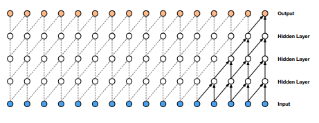
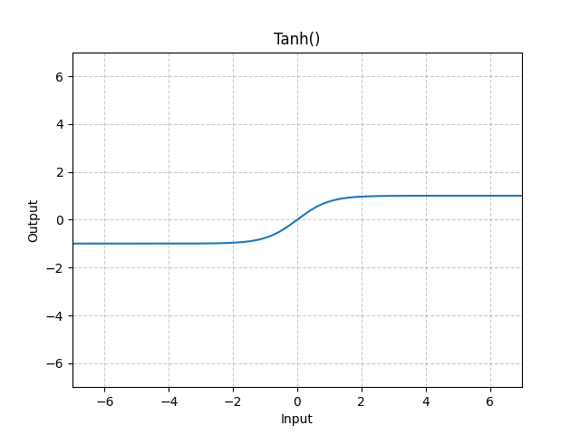
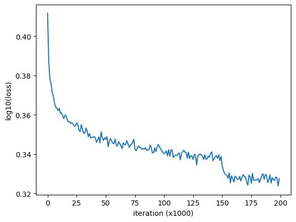

import randomimport stringimport numpy as npimport torchimport torch.nn.functional as Ffrom torch import Tensorimport matplotlib.pyplot as pltimport seaborn as snsimport plotly.express as pximport plotly.graph_objects as goimport pandas as pdfrom dataclasses import dataclass, fieldtorch.set_printoptions(linewidth=120)seed =42# 2**31 - 1torch.manual_seed(seed)
In our previous notebook, we successfully implemented a Multi-Layer Perceptron (MLP) character-level language model. This model was designed to predict the fourth character in a sequence based on three preceding characters, utilizing only a single hidden layer.
In this notebook, we aim to enhance the complexity of our architecture. Specifically, we intend to expand the input sequence by incorporating more characters. Additionally, we aim to address the limitation of the previous model where a single hidden layer compressed a significant amount of information too quickly. Instead, we will develop a deeper model that progressively integrates this information to make more accurate predictions regarding the next character in the sequence.
To accomplish this, we will adopt an approach similar to that of a WaveNet, as described in the research paper published by DeepMind in 2016. While WaveNet primarily focuses on predicting audio sequences rather than character or word-level sequences, the fundamental model structure remains analogous. It operates as an autoregressive model, predicting the subsequent character in a sequence. Notably, the architecture employs a hierarchical framework, resembling a tree-like structure, to effectively forecast the next character.

Wavenet (van den Oord et al. 2016)
Setup
Load the data
# Load the datawithopen("./data/names.txt", "r") as f: names = f.read().splitlines()print(f"Total # names: {len(names):.>25,}")print(f"Total # characters in all names: {len(''.join(names)):,}")print(names[:5])
Total # names: ...................32,033
Total # characters in all names: 196,113
['emma', 'olivia', 'ava', 'isabella', 'sophia']
Encoding and decoding characters
We define an encoder ch2ix and decoder ix2ch function that maps a character with a numerical representation (i.e. a unique integer) and vice-versa.
chars ="."+ string.ascii_lowercasech2ix = {s: i for i, s inenumerate(chars)}ix2ch = {i: s for s, i in ch2ix.items()}print("Encoder ch2ix:\n", ch2ix)print("Decoder ix2ch:\n", ix2ch)print("E.g. emma:", [ch2ix[c] for c in".emma."])vocab_size =len(chars)print(f"\nVocab size: {vocab_size:,}")
@dataclassclass Dataset:""" Attributes: names: list of names. block_size: context length: how many characters do we take to predict the next one? """ names: list[str] block_size: int=3 verbose: bool=False X: Tensor = field(init=False) Y: Tensor = field(init=False)def __post_init__(self) ->None:self._make_dataset()def _make_dataset(self) ->None: X, Y = [], []for w inself.names:ifself.verbose:print(w) context = [0] *self.block_sizefor ch in w +".": ix = ch2ix[ch] X.append(context) Y.append(ix)ifself.verbose:print("".join(ix2ch[i] for i in context), "--->", ix2ch[ix]) context = context[1:] + [ix] # crop and appendself.X = torch.tensor(X)self.Y = torch.tensor(Y)
Applies a linear transformation to the incoming data: \(y=xA^T+b\)
class Linear:def__init__(self, in_features: int, out_features: int, bias: bool=True, seed: int|None=None, ) ->None: g = torch.Generator().manual_seed(seed) if seed elseNoneself.use_bias = biasself.weight = torch.randn((in_features, out_features), generator=g)self.bias = torch.zeros(out_features) if bias elseNonedef__call__(self, x: Tensor) -> Tensor: x = x @self.weightifself.use_bias: x +=self.biasself.out = x # To be able to access x for plottingreturnself.outdef parameters(self) ->list:return [self.weight] + ([self.bias] ifself.use_bias else [])
The running mean and standard deviation are not computed by backpropagation, but rather by an exponential moving average in the forward pass.
It is important to note that the behavior of batch normalization differs between training and evaluation phases. By utilizing the is_train parameter, we can appropriately configure the module to operate in the desired state for each phase.
Batches are typically utilized for efficiency purposes but batchorm introduces a coupling effect among the activations across the batch.
class BatchNorm1d:def__init__(self, num_features: int, eps: float=1e-5, momentum: float=0.1, is_train=True ) ->None:self.eps = epsself.momentum = momentumself.is_train = is_train# Trainable parametersself.gamma = torch.ones(num_features)self.beta = torch.zeros(num_features)# Running stats trained with 'momentum update'self.running_mean = torch.zeros(num_features)self.running_var = torch.ones(num_features)def__call__(self, x: Tensor) -> Tensor:ifself.is_train: x_mean = x.mean(0, keepdim=True) x_var = x.var(0, keepdim=True)else: x_mean =self.running_mean x_var =self.running_var x = (x - x_mean) / torch.sqrt(x_var +self.eps) x =self.gamma * x +self.beta# Update running statsifself.is_train:self.running_mean = (1-self.momentum ) *self.running_mean +self.momentum * x_meanself.running_var = (1-self.momentum ) *self.running_var +self.momentum * x_varself.out = x # To be able to access x for plottingreturnself.outdef parameters(self) ->list[Tensor]:return [self.gamma, self.beta]
Applies the element-wise function: \(\tanh(x)=\large\frac{e^x-e^{-x}}{e^x+e^{-x}}\)

class Tanh:def__call__(self, x) -> Tensor: x = torch.tanh(x)self.out = x # To be able to access x for plottingreturnself.outdef parameters(self) ->list:return []
A simple lookup table that stores embeddings of a fixed dictionary and size. The input to the module is a list of indices, and the output is the corresponding embedding.
class Embedding:def__init__(self, num_embeddings: int, embedding_dim: int, seed: int|None=None ) ->None: g = torch.Generator().manual_seed(seed) if seed elseNoneself.weight = torch.randn((num_embeddings, embedding_dim), generator=g)def__call__(self, IX: Tensor) -> Tensor:self.out =self.weight[IX]returnself.outdef parameters(self) ->list:return [self.weight]
A sequential container. Modules will be added to it in the order they are passed in the constructor.
class Sequential:def__init__(self, layers) ->None:self.layers = layersdef__call__(self, x: Tensor) -> Tensor:for layer inself.layers: x = layer(x)self.out = x # To be able to access x for plottingreturnself.outdef parameters(self) ->list:return [p for layer inself.layers for p in layer.parameters()]
MLP Baseline Model
n_emb =10# Dimensionality of the character embeddingn_hidden =200# Number of neurons in the hidden layermodel = Sequential( [ Embedding(vocab_size, n_emb), # 27 x 10 Flatten(), Linear(block_size * n_emb, n_hidden, bias=False), # 30 x 200 BatchNorm1d(n_hidden), # 100 Tanh(), Linear(n_hidden, vocab_size), # 100 x 27 ])# Parameter initializationwith torch.no_grad(): model.layers[-1].weight *=0.1# type: ignore # make the output layer less confidentparameters = model.parameters()print(f"Number of parameters: {sum(p.numel() for p in parameters):,}")for p in parameters: p.requires_grad =True
Number of parameters: 12,097
Training
max_steps =200000bs =32lossi = []for i inrange(max_steps):# minibatch construct ix = torch.randint(0, Xtr.shape[0], (bs,)) Xb, Yb = Xtr[ix], Ytr[ix] # batch X,Y# forward pass logits = model(Xb) # 32 x 27 loss = F.cross_entropy(logits, Yb)# backward passfor p in parameters: p.grad =None loss.backward()# update: simple SGD lr =0.1if i <150000else0.01# step learning rate decayfor p in parameters: p.data +=-lr * p.grad # type: ignore# track statsif i %10000==0: # print every once in a whileprint(f"{i:7d}/{max_steps:7d}: {loss.item():.4f}") lossi.append(loss.log10().item())
loss = torch.tensor(lossi).view(-1, 1000).mean(1)plt.plot(loss)plt.xlabel("iteration (x1000)")plt.ylabel("log10(loss)")plt.show()

At iteration 150k we observe that the learning rate decay subtracts a lot of energy out of the system and allows the model to settle into a local minimum.
Evaluation
Putting the model in evaluation mode
for layer in model.layers:ifisinstance(layer, BatchNorm1d): layer.is_train =False# type: ignore
Evaluate the loss
@torch.no_grad() # this decorator disables gradient tracking inside pytorchdef split_loss(split) ->None: x, y = {"train": (Xtr, Ytr),"val": (Xval, Yval),"test": (Xte, Yte), }[split] logits = model(x) loss = F.cross_entropy(logits, y)print(split, loss.item())split_loss("train")split_loss("val")
train 2.1027722358703613
val 2.122612714767456
The difference between the training and validation loss is quite small. This indicates that the model is not overfitting to the training data. Therefore, we can expect better results when we make our model deeper and more larger.
Sample from the model
for _ inrange(20): out = [] context = [0] * block_size # initialize with all ...whileTrue:# forward pass the neural net logits = model(torch.tensor([context])) probs = F.softmax(logits, dim=1)# sample from the distribution ix = torch.multinomial(probs, num_samples=1).item()# shift the context window and track the samples context = context[1:] + [ix] out.append(ix)# if we sample the special '.' token, breakif ix ==0:break name ="".join(ix2ch[i] for i in out)print(f"exist: {name in names} - {name:16s}")
We can increase the block_size to 8 and evaluate the model again.
Code
# Create a training, validation and test setblock_size =8np.random.seed(seed)np.random.shuffle(names)n1 =int(0.8*len(names))n2 =int(0.9*len(names))ds_tr = Dataset(names[:n1], block_size=block_size)Xtr, Ytr = ds_tr.X, ds_tr.Y # 80%ds_val = Dataset(names[n1:n2], block_size=block_size)Xval, Yval = ds_val.X, ds_val.Y # 10%ds_te = Dataset(names[n2:], block_size=block_size)Xte, Yte = ds_te.X, ds_te.Y # 10%print(f"Training set: {len(ds_tr.names):.>25,} names")print(f"Validation set: {len(ds_val.names):.>23,} names")print(f"Test set: {len(ds_te.names):.>29,} names")print()print(f"Training set: {len(Xtr):.>25,}{block_size}-char samples")print(f"Validation set: {len(Xval):.>23,}{block_size}-char samples")print(f"Test set: {len(Xte):.>29,}{block_size}-char samples")# ------------------------------------------------------------# MLP modeln_emb =10# Dimensionality of the character embeddingn_hidden =200# Number of neurons in the hidden layermodel = Sequential( [ Embedding(vocab_size, n_emb), # 27 x 10 Flatten(), Linear(block_size * n_emb, n_hidden, bias=False), # 80 x 200 BatchNorm1d(n_hidden), # 100 Tanh(), Linear(n_hidden, vocab_size), # 100 x 27 ])# ------------------------------------------------------------# Parameter initializationwith torch.no_grad(): model.layers[-1].weight *=0.1# type: ignore # make the output layer less confidentparameters = model.parameters()print(f"\nNumber of parameters: {sum(p.numel() for p in parameters):,}")for p in parameters: p.requires_grad =True# ------------------------------------------------------------# Training loopmax_steps =200000bs =32lossi = []for i inrange(max_steps):# minibatch construct ix = torch.randint(0, Xtr.shape[0], (bs,)) Xb, Yb = Xtr[ix], Ytr[ix] # batch X,Y# forward pass logits = model(Xb) # 32 x 27 loss = F.cross_entropy(logits, Yb)# backward passfor p in parameters: p.grad =None loss.backward()# update: simple SGD lr =0.1if i <150000else0.01# step learning rate decayfor p in parameters: p.data +=-lr * p.grad # type: ignore# track statsif i %10000==0: # print every once in a whileprint(f"{i:7d}/{max_steps:7d}: {loss.item():.4f}") lossi.append(loss.log10().item())# ------------------------------------------------------------# Plot average lossloss = torch.tensor(lossi).view(-1, 1000).mean(1)plt.plot(loss)plt.xlabel("iteration (x1000)")plt.ylabel("log10(loss)")plt.show()# ------------------------------------------------------------# Put the model in evaluation mode\for layer in model.layers:ifisinstance(layer, BatchNorm1d): layer.is_train =False# type: ignore# ------------------------------------------------------------# Evaluate the model@torch.no_grad() # this decorator disables gradient tracking inside pytorchdef split_loss(split) ->None: x, y = {"train": (Xtr, Ytr),"val": (Xval, Yval),"test": (Xte, Yte), }[split] logits = model(x) loss = F.cross_entropy(logits, y)print(split, loss.item())split_loss("train")split_loss("val")# ------------------------------------------------------------# Generate some namesfor _ inrange(20): out = [] context = [0] * block_size # initialize with all ...whileTrue:# forward pass the neural net logits = model(torch.tensor([context])) probs = F.softmax(logits, dim=1)# sample from the distribution ix = torch.multinomial(probs, num_samples=1).item()# shift the context window and track the samples context = context[1:] + [ix] out.append(ix)# if we sample the special '.' token, breakif ix ==0:break name ="".join(ix2ch[i] for i in out)print(f"exist: {name in names} - {name:16s}")
The number of parameters have increased from 12.097 to 22.097 ((8-3)10200). The training loss has decreased from 2.103 to 2.072 and the validation loss has decreased from 2.123 to 2.108.
Performance log - original (3 char context + 200 hidden neurons, 12K parameters): 2.103 train loss, 2.123 val loss - context 3->8 char (22K parameters): 2.072 train loss, 2.108 val loss
Wavenet Model
The problem with the MLP model is that we are crushing all the information into a single vector from the beginning. Even if we make the model deeper, we will still have the same problem.
We can solve this by using a hierarchical approach like in Wavenet. In that architecture, the input is cruched slowly. In particular we take two characters and fuse them into a bi-gram representation. Then we take these bi-grams and fuse them into a 4-gram representation. We continue this process until we have a representation of the entire sequence. By using this tree-like hierarchical approach, we fuse the information from the previous context slowly.
Wavenet (van den Oord et al. 2016)
In Pytorch when we can multiply a n-dimentional tensor with a 2-dimentional weight matrix. The result is a tensor with the same number of dimensions as the input tensor, except for the last dimension which is equal to the number of columns of the weight matrix. The matrix multiplication @ only works on the last dimension of the input tensor. The other dimensions are left unchanged.
x = torch.randn(2, 3, 4, 5)W = torch.randn(5, 6)b = torch.randn(6)y = x @ W + by.shape
torch.Size([2, 3, 4, 6])
In our Wavenet model, we will have 8 characters comming in like this: 1, 2, 3, 4, 5, 6, 7, 8. In contrast with the previous MLP model, we don’t want to flatten all of them into a single vector. Instead, we want to fuse them into a bi-gram representation. We want to group them like this: (1, 2), (3, 4), (5, 6), (7, 8). We can do this by reshaping the input tensor. We then want each of these bi-grams to be multiplied by a weight matrix in parallel.
We don’t want the flatten layer to output a 4 x 80 tensor. Instead, we want it to output a 4 x 4 x 20 tensor. The first 4 is our batch dimention, the second 4 is the number of bi-grams and the last 20 is the size of the concatenated bi-gram embeddings.
We have to change the flatten layer to output a 4 x 4 x 20 tensor and the linear layer to accept it as input.
emb = torch.randn(4, 8, 10) # 4 x 8 x 10
We want to create a 4 x 4 x 20 tensor where the consecutive pairs of 10-dim embedding vectors are concatenated. We can do this in two ways:
%%timeit# 1st methodemb_even = emb[:, ::2, :] # 4 x 4 x 10emb_odd = emb[:, 1::2, :] # 4 x 4 x 10torch.cat([emb_even, emb_odd], dim=2) # 4 x 4 x 20
28.4 µs ± 170 ns per loop (mean ± std. dev. of 7 runs, 10,000 loops each)
%%timeit# 2nd methodemb.view(4, 4, 20) # 4 x 4 x 20
3.54 µs ± 220 ns per loop (mean ± std. dev. of 7 runs, 100,000 loops each)
Wavenet implementation
We will now implement the Wavenet like in the diagram, with folowing changes: - The block_size is 8 instead of 16. - The number of hidden layers is 3 instead of 4.
We first need to modify the Flatten module.
class FlattenConsecutive:def__init__(self, n) ->None:self.n = nself.out: Tensordef__call__(self, x: Tensor) -> Tensor: B, L, C = x.shape # batch, sequence length, channels x = x.view(B, L //self.n, C *self.n)if x.shape[1] ==1: # all consecutive chars x = x.squeeze(1)self.out = xreturnself.outdef parameters(self) ->list:return []
We also need to modify the BatchNorm1d module.
The calculations in the current implementation are as follows:
x = torch.randn(32, 4, 68) # 32 x 4 x 68x_mean = x.mean(0, keepdim=True) # 1 x 4 x 68x_var = x.var(0, keepdim=True) # 1 x 4 x 68x_hat = (x - x_mean) / torch.sqrt(x_var +1e-5) # 32 x 4 x 68print(f"mean shape: {x_mean.shape}")print(f"running mean shape: {model.layers[3].running_mean.shape}") # type: ignore
mean shape: torch.Size([1, 4, 68])
running mean shape: torch.Size([1, 200])
The mean, var, running_mean and running_var are calculated only over the 1st dimension. Their shape is 1 x 4 x 68 which is not correct! We are maintaining statistics for every one of the 4 blocks of 68 channels individualy and independently. To correct this we need to calculate the statistics over the 1st and 2nd dimension. Their shape should be 1 x 1 x 68.
We will now modify the BatchNorm1d module to accept 2d or 3d tensors.
class BatchNorm1d:def__init__(self, num_features: int, eps: float=1e-5, momentum: float=0.1, is_train=True ) ->None:self.eps = epsself.momentum = momentumself.is_train = is_train# Trainable parametersself.gamma = torch.ones(num_features)self.beta = torch.zeros(num_features)# Running stats trained with 'momentum update'self.running_mean = torch.zeros(num_features)self.running_var = torch.ones(num_features)def__call__(self, x: Tensor) -> Tensor:ifself.is_train:if x.ndim ==2: dim =0elif x.ndim ==3: dim = (0, 1)else:raiseValueError(f"Unsupported tensor shape: {x.shape}") x_mean = x.mean(dim, keepdim=True) x_var = x.var(dim, keepdim=True)else: x_mean =self.running_mean x_var =self.running_var x = (x - x_mean) / torch.sqrt(x_var +self.eps) x =self.gamma * x +self.beta# Update running statsifself.is_train:self.running_mean = (1-self.momentum ) *self.running_mean +self.momentum * x_meanself.running_var = (1-self.momentum ) *self.running_var +self.momentum * x_varself.out = x # To be able to access x for plottingreturnself.outdef parameters(self) ->list[Tensor]:return [self.gamma, self.beta]
Training set: ...................25,626 names
Validation set: ..................3,203 names
Test set: ........................3,204 names
Training set: ..................182,509 8-char samples
Validation set: .................22,809 8-char samples
Test set: .......................22,828 8-char samples
Wavenet model architecture
In order to see if the hierarchical approach works better, we will change n_hidden to 68 to have roughly the same number of parameters as the MLP model. Like that the model has roughly the same capacity as the MLP model.
n_emb =10# Dimensionality of the character embeddingn_hidden =68# Number of neurons in the hidden layern_consecutive =2# Number of consecutive characters to considermodel = Sequential( [# Embedding layer Embedding(vocab_size, n_emb),# Hidden layer 1 FlattenConsecutive(n_consecutive), Linear(2* n_emb, n_hidden, bias=False), BatchNorm1d(n_hidden), Tanh(),# Hidden layer 2 FlattenConsecutive(n_consecutive), Linear(2* n_hidden, n_hidden, bias=False), BatchNorm1d(n_hidden), Tanh(),# Hidden layer 3 FlattenConsecutive(n_consecutive), Linear(2* n_hidden, n_hidden, bias=False), BatchNorm1d(n_hidden), Tanh(),# Projection layer Linear(n_hidden, vocab_size), ])# ------------------------------------------------------------# Parameter initializationwith torch.no_grad(): model.layers[-1].weight *=0.1# type: ignore # make the output layer less confidentparameters = model.parameters()print(f"\nNumber of parameters: {sum(p.numel() for p in parameters):,}")for p in parameters: p.requires_grad =True
Number of parameters: 22,397
Check shapes
# Forward a batch of 3 samples to create the `out` tensors.ix = torch.randint(0, Xtr.shape[0], (3,))model(Xtr[ix])# Print the layer names and output shapesfor layer in model.layers:print(f"{layer.__class__.__name__:>15s}: {layer.out.shape}")
# Put the model in evaluation modelfor layer in model.layers:ifisinstance(layer, BatchNorm1d): layer.is_train =False# type: ignore# ------------------------------------------------------------# Evaluate the model@torch.no_grad() # this decorator disables gradient tracking inside pytorchdef split_loss(split) ->None: x, y = {"train": (Xtr, Ytr),"val": (Xval, Yval),"test": (Xte, Yte), }[split] logits = model(x) loss = F.cross_entropy(logits, y)print(split, loss.item())split_loss("train")split_loss("val")# ------------------------------------------------------------# Generate some namesfor _ inrange(20): out = [] context = [0] * block_size # initialize with all ...whileTrue:# forward pass the neural net logits = model(torch.tensor([context])) probs = F.softmax(logits, dim=1)# sample from the distribution ix = torch.multinomial(probs, num_samples=1).item()# shift the context window and track the samples context = context[1:] + [ix] out.append(ix)# if we sample the special '.' token, breakif ix ==0:break name ="".join(ix2ch[i] for i in out)print(f"exist: {name in names} - {name:16s}")